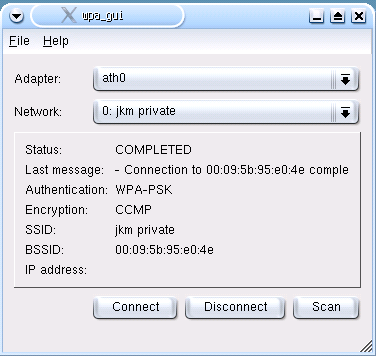
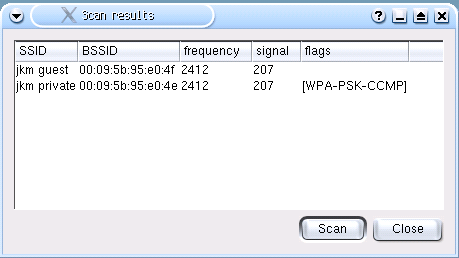
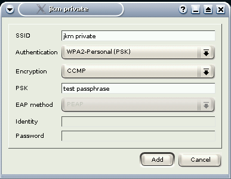
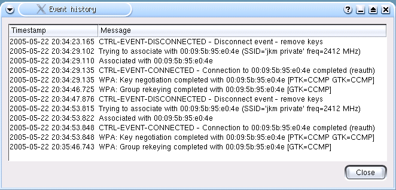
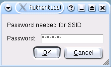

wpa_gui screenshots
Main window

Scan results

Network configuration (new network from scan results)

Event history

User input for authentication credentials

Jouni Malinen
Last modified: Thu Mar 8 19:44:46 PST 2007